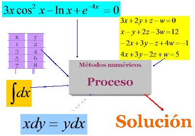
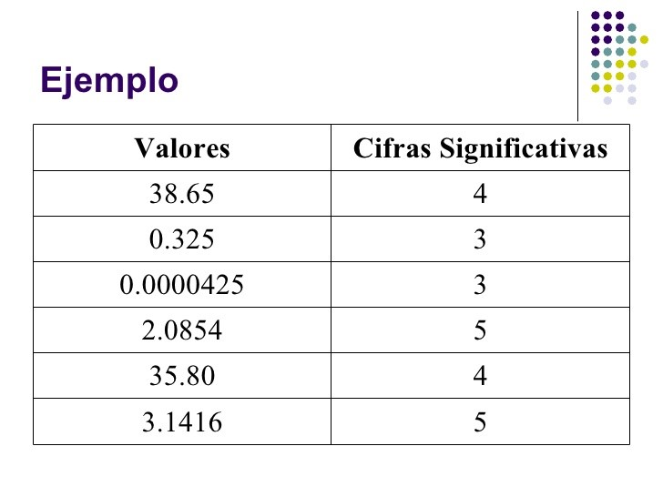
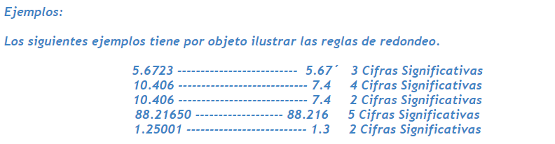

Métodos exactos o analíticos:

Estos métodos se utilizan generalmente para clases limitadas de problemas que se puedan resolver mediante métodos lineales o de geometría simple de pocas dimensiones, tienen un valor practico limitados ya que por lo regular los problemas reales no son lineales pues implican formas y procesos complejos.
Métodos gráficos:
Comúnmente los métodos gráficos pueden usarse para resolver problemas complejos, aunque los resultados de estos no son del todo precisos y únicamente se utilizan para problemas que puedan describirse en tres dimensiones o menos de estas.
Métodos numéricos:
La utilización de este método con el uso de instrumentos como calculadoras y reglas de calculo que suelen presentar resultados que no son del todo consistentes ya que suele haber errores cuando el trabajo de hace manualmente.
Métodos directos e interactivos:
Los métodos directos se caracterizan por llevarnos a una ejecución completa de todos sus pasos a la ejecución buscada si es que esta existe.
Los métodos iterativos o al igual conocidos como métodos de aproximación sucesiva se basa en obtener una sucesión de valores como X1, X2 o X3 de forma que cada elemento es mejor aproximación que el de la solución anterior.
Cifras significativas:
El concepto de cifra significativa es uno de los más confusos del análisis de incertidumbres, al superponerse en él consideraciones de tipo matemático y de tipo físico. En general, estamos interesados en encontrar un concepto de significación física (por tanto, experimental, no exclusivamente numérica) de una determinada cifra integrante de una expresión numérica. Es evidente que ello dependerá de la medida concreta y vendrá determinada por su incertidumbre experimental concreta. Podemos definir el concepto de cifra significativa como aquella que aporta información no ambigua ni superflua acerca de una determinada medida experimental.

Notación científica:
El redondeo es tal que la cantidad de cifras significativas del resultado es igual al número más pequeño de cifras significativas que contiene la cantidad en la operación.

Aproximaciones y errores:
Una aproximación es un valor cercano a uno considerado como real o verdadero. Esta cercanía, o diferencia, se conoce como error. Normalmente, la consideración de la validez de una aproximación depende de la cota de error que el experimentador considere pertinente en función del contexto del fenómeno bajo estudio. Esto implica que también debe considerarse que magnitud debe ser un valor real, que en el ámbito de la Ingeniería pocas veces se conoce, lo que obliga a adoptar convenciones.
Exactitud y precisión:
En Ingeniería, se denomina exactitud a la capacidad de un instrumento de medir un valor cercano al de la magnitud real. Exactitud implica precisión, pero no al contrario. Exactitud y precisión no son equivalentes. Exactitud es capacidad para acercarse a la magnitud real, y precisión es la capacidad de generar resultados similares. La precisión se logra cuando un instrumento para repetir mediciones exactas cuando estas se realizan consecutivamente.
De acuerdo con la definición de aproximación numérica, la exactitud se aplica en los métodos numéricos en cuanto a la capacidad del método de generar un resultado muy cercano al valor real; se percibe la cercanía entre la exactitud y el concepto de error. Por otra parte, los métodos numéricos a través de iteraciones generan valores aproximados cada vez más exactos, es decir, estas iteraciones deberán ser precisas. Dado lo anterior, los métodos numéricos deberán tener como cualidades la exactitud y la precisión.
Incertidumbre:
La incertidumbre de medida comprende, en general, varios componentes. Algunos pueden ser evaluados a partir de la distribución estadística de los resultados de series de mediciones y pueden caracterizarse por sus desviaciones estándar experimentales. Los otros componentes, que también pueden ser caracterizados por desviaciones estándar, se evalúan asumiendo distribuciones de probabilidad basadas en la experiencia adquirida o en otras informaciones.
Definición de errores:
Una actividad frecuente del profesional de la Ingeniería consiste en trabajar con modelos matemáticos representativos de un fenómeno físico. Estos modelos son abstracciones matemáticas que distan mucho de representar exactamente al fenómeno bajo estudio debido principalmente a las carencias y dificultades que aún posee el humano de la comprensión total de la naturaleza. Como consecuencia de esto existen diferencias entre los resultados obtenidos experimentalmente y los emanados propiamente del modelo matemático. A las diferencias cuantitativas entre los dos modelos se les denomina Errores.
Clasificación de los errores:
Las diferencias (errores) son múltiples y de diversa naturaleza, aunque pueden separarse en dos grupos gen éricos: Los errores que provienen del modelado teórico (o abstracción matemática) del fenómeno real; estos errores se denominan Errores del modelo o inherentes. Los errores inherentes son producto de factores intrínsecos a la naturaleza, al ambiente y las personas mismas. Los errores inherentes son imposibles de remediar, aunque pueden minimizarse; en consecuencia, no pueden cuantificarse. Se distinguen dos tipos de errores inherentes: Las incertidumbres hacen referencia a las dimensiones físicas que nunca podrán ser medidas en forma exacta debido a la naturaleza de la materia y a las imperfecciones de los instrumentos de medición. Las verdaderas equivocaciones son las situaciones que se producen en la lectura de instrumentos de medición o en el traslado de información y que son inadvertidas a las personas; un claro ejemplo de estas situaciones es la denominada ceguera de taller. Los errores del método son producto de la limitante en la representación y manipulación de cantidades numéricas utilizadas en los cálculos necesarios en el desarrollo del modelo matemático. Es de destacar que los dispositivos de cálculo (tales como calculadoras y computadoras) utilizan y manipulan cantidades en forma imprecisa. Existen dos grandes tipos de errores del método: El truncamiento se provoca ante la imposibilidad de manipular, por parte de un instrumento de cómputo, una cantidad infinita de términos o cifras. Los términos o cifras omitidas (que son infinitas en número) introducen un error en los resultados calculados. El redondeo se produce por el mismo motivo que el truncamiento, pero, a diferencia de éste, las cifras omitidas sí son consideradas en la cifra resultante. Esta consideración se hace aplicando el siguiente esquema al dígito menos significativo (dos) de la cifra a redondear de acuerdo al siguiente esquema:
°1. Si el dos es mayor a 5, se incrementa en una unidad la cifra anterior.
°2. Si el dos es menor a 5, la cifra anterior no se modifica.
°3. Si el dos es igual a 5, deber ‘a observarse a la cifra anterior; si ´esta es par no sufre modificación, pero, por el contrario, si es impar, deber ‘a incrementarse en una unidad. Quizás se conozca una versión práctica y popular del redondeo simétrico en el cual la consideración tres se incluye en la primera de este esquema. Finalmente, existen también esquemas que permiten minimizar la ocurrencia de estos errores, de igual forma es importante destacar que los errores del método sí pueden ser cuantificados.